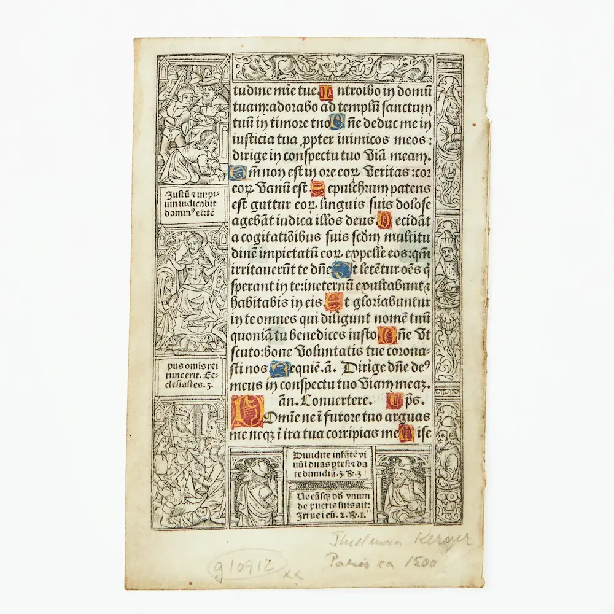

Парыж. Канец ХV ст., факсіміле.
Часаслоў выйшаў у Парыжы каля 1497–1500 гг. Часаслоў утрымлівае малітвы і ўрыўкі з Бібліі для штодзённага чытання. Часаслоў, як і Біблія Гутэнберга з’яўляецца прыкладам інкунабулы (кніга\і якія выдаваліся з сярэдзіны XV ст. і да 1500 г. уключна). Інкунабулы былі на світанні кнігадрукавання, таму слова літаральна перакладаецца як калыска. Старонка часаслова аздоблена гравюрамі. Пачаткі сказа вылучаюцца вялікімі залацістымі літарамі з нанесенай на іх чырвонай ці сіняй фарбай. Старонка кнігі аздоблена гравюрамі. Гравюры з евангельскімі сюжэтамі былі выкананы на дрэварытах падрыхтаванымі мастаком Цільманам Керверам.